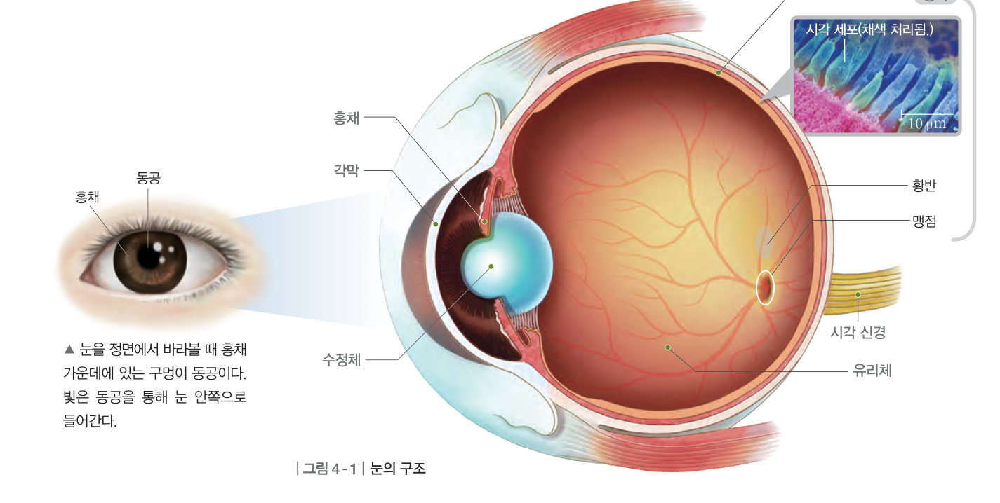
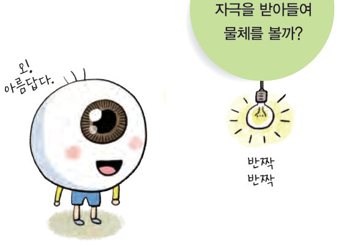
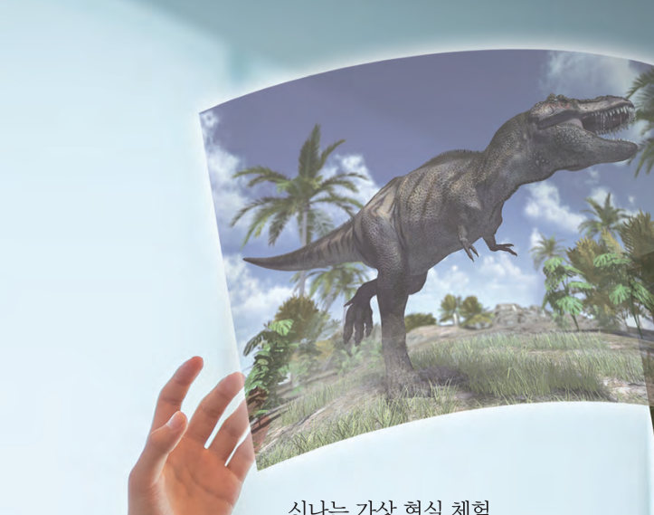
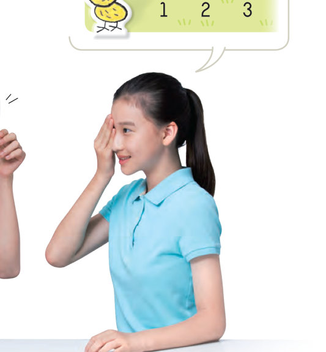
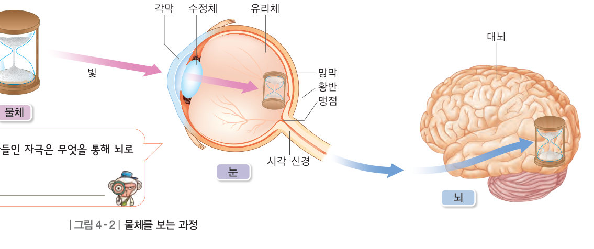
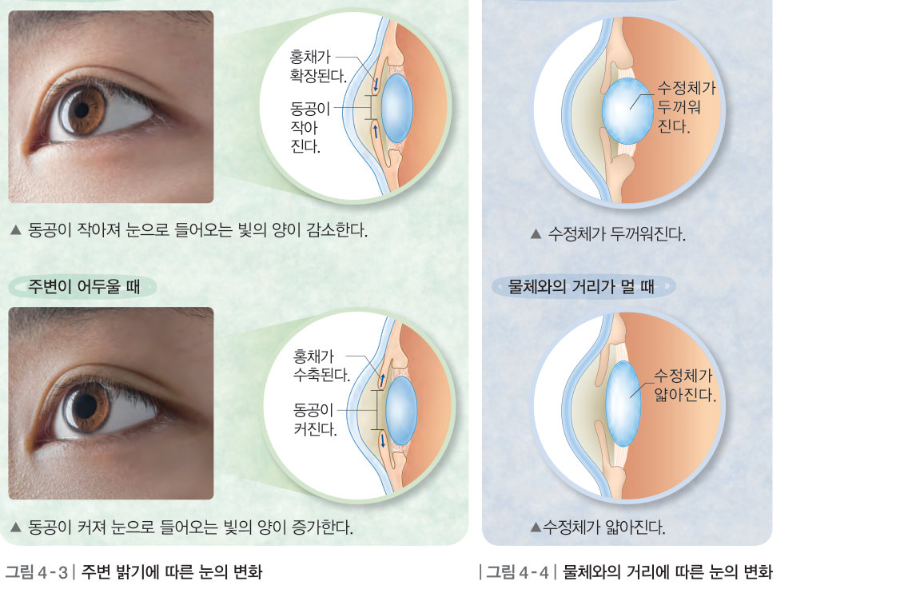

눈에서 어떤 자극을 받아들여 물체를 볼까? 눈 단면을 눌러 각 구조의 기능을 알아보고, 화면에서 직접 맹점을 찾아본 뒤, 밝기와 거리를 바꾸며 동공과 수정체가 어떻게 조절되는지 확인해 보자.

가상 현실 체험을 했어. 가상 현실 영상 장치를 착용하고 체험을 시작하자마자 커다란 공룡이 요란한 소리를 내며 눈앞에 나타나서 깜짝 놀랐지. 또, 뜨거운 분화구를 지날 때는 더운 바람이 불고, 숲을 지날 때는 풀 냄새가 났어. 가상 현실이 마치 실제처럼 느껴져서 정말 신기했는데, 이러한 것은 우리의 감각 기관과 관련이 있대. 감각은 어떻게 느낄까?
▶ 이미 배운 내용 | 우리 몸에는 자극을 받아들이는 감각 기관이 있다.
🔑 첫 번째 열쇠 가상 현실 영상 장치에서 공룡을 비롯한 주변 모습을 보는 과정을 확인한다. · 두 번째 열쇠 공룡이 내는 소리를 듣는 과정과 바람을 느끼는 과정을 알아본다. · 세 번째 열쇠 풀 냄새를 맡는 과정을 알아본다.
이 단원과 관련해 이미 알고 있는 것에 표시해 보자.
우리 몸에는 여러 가지 감각 기관이 있으며, 감각 기관마다 받아들이는 자극이 다르다. 우리는 눈에서 빛을 자극으로 받아들여 사물의 모양이나 색깔, 사물과의 거리 등을 느끼는데, 이러한 감각을 시각이라고 한다.
성인의 눈은 크기가 탁구공만 하며, 그림 4-1과 같이 홍채, 각막, 수정체, 유리체, 망막 등으로 이루어져 있다. 망막에는 시각 세포가 있으며, 시각 세포는 빛을 자극으로 받아들인다. 눈을 정면에서 바라볼 때 홍채 가운데에 있는 구멍이 동공이다. 빛은 동공을 통해 눈 안쪽으로 들어간다.
| ⑴ 눈으로 들어온 빛이 상을 맺는 부분 | |
| ⑵ 동공을 통해 들어온 빛이 굴절되는 부분 | |
| ⑶ 눈으로 들어오는 빛의 양을 조절하는 부분 | |
| ⑷ 시각 세포에서 받아들인 자극을 뇌로 전달하는 부분 |

물체에서 나온 빛이 각막과 수정체를 통과하면서 굴절된 다음, 유리체를 지나 망막에 상을 맺는다. 그러면 망막의 시각 세포가 빛 자극을 받아들이고, 이 자극이 시각 신경을 통해 뇌로 전달되어 물체의 모습을 보게 된다. 망막에는 시각 세포가 많이 모여 있는 부분인 황반과 시각 신경이 모여 나가 시각 세포가 없는 부분인 맹점이 있다. 황반에 물체의 상이 맺히면 물체가 선명하게 보이고, 맹점에 상이 맺히면 물체가 보이지 않는다.

| 평가 기준 | 스스로 평가 |
|---|---|
| 탐구 기능 눈의 구조와 관련지어 물체를 보는 과정을 설명하였는가? | |
| 탐구 기능 자신의 의견을 논리적으로 전달하였는가? | |
| 인성 친구의 의견에 귀를 기울였는가? |
주변 밝기가 달라지면 홍채의 크기에 따라 동공의 크기가 변하여 눈으로 들어오는 빛의 양이 조절된다. 주변이 밝으면 홍채가 확장되면서 동공의 크기가 작아져 눈으로 들어오는 빛의 양이 감소한다. 주변이 어두우면 홍채가 수축되면서 동공의 크기가 커져 눈으로 들어오는 빛의 양이 증가한다.
눈에서는 물체와의 거리에 따라 수정체의 두께가 변하여 망막에 또렷한 상이 맺히는 작용도 일어난다. 가까이 있는 물체를 보면 수정체가 두꺼워지고, 멀리 있는 물체를 보면 수정체가 얇아진다.

| ⑴ 빛은 동공을 통해 눈 안쪽으로 들어간다. | |
| ⑵ 황반은 망막에서 시각 세포가 없는 곳이다. | |
| ⑶ 멀리 있는 물체를 볼 때는 수정체가 얇아진다. | |
| ⑷ 주변이 밝아지면 동공이 커져 눈으로 들어오는 빛의 양이 감소한다. |
| 평가 기준 | 스스로 평가 |
|---|---|
| 눈의 구조와 기능을 알고, 물체를 보는 과정을 설명할 수 있다. | |
| 밝기와 거리에 따른 눈의 조절 작용을 설명할 수 있다. |